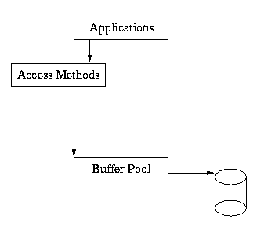
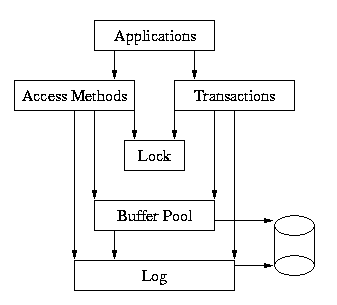

Chapter 8. Berkeley DB Architecture
Table of Contents
The big picture
The previous chapters in this Reference Guide have described applications that use the Berkeley DB access methods for fast data storage and retrieval. The applications described in the following chapters are similar in nature to the access method applications, but they are also threaded and/or recoverable in the face of application or system failure.
Application code that uses only the Berkeley DB access methods might appear as follows:
switch (ret = dbp->/put(dbp, NULL, &key, &data, 0)) {
case 0:
printf("db: %s: key stored.\n", (char *)key.data);
break;
default:
dbp->/err(dbp, ret, "dbp->/put");
exit (1);
}The underlying Berkeley DB architecture that supports this is

As you can see from this diagram, the application makes calls into the access methods, and the access methods use the underlying shared memory buffer cache to hold recently used file pages in main memory.
When applications require recoverability, their calls to the Access Methods must be wrapped in calls to the transaction subsystem. The application must inform Berkeley DB where to begin and end transactions, and must be prepared for the possibility that an operation may fail at any particular time, causing the transaction to abort.
An example of transaction-protected code might appear as follows:
for (fail = 0;;) {
/* Begin the transaction. */
if ((ret = dbenv->/txn_begin(dbenv, NULL, &tid, 0)) != 0) {
dbenv->/err(dbenv, ret, "dbenv->/txn_begin");
exit (1);
}
/* Store the key. */
switch (ret = dbp->/put(dbp, tid, &key, &data, 0)) {
case 0:
/* Success: commit the change. */
printf("db: %s: key stored.\n", (char *)key.data);
if ((ret = tid->/commit(tid, 0)) != 0) {
dbenv->/err(dbenv, ret, "DB_TXN->/commit");
exit (1);
}
return (0);
case DB_LOCK_DEADLOCK:
default:
/* Failure: retry the operation. */
if ((t_ret = tid->/abort(tid)) != 0) {
dbenv->/err(dbenv, t_ret, "DB_TXN->/abort");
exit (1);
}
if (fail++ == MAXIMUM_RETRY)
return (ret);
continue;
}
}In this example, the same operation is being done as before; however, it is wrapped in transaction calls. The transaction is started with DB_ENV->txn_begin() and finished with DB_TXN->commit(). If the operation fails due to a deadlock, the transaction is aborted using DB_TXN->abort(), after which the operation may be retried.
There are actually five major subsystems in Berkeley DB, as follows:
Access Methods
The access methods subsystem provides general-purpose support for creating and accessing database files formatted as Btrees, Hashed files, and Fixed- and Variable-length records. These modules are useful in the absence of transactions for applications that need fast formatted file support. See DB->open() and DB->cursor() for more information. These functions were already discussed in detail in the previous chapters.
Memory Pool
The Memory Pool subsystem is the general-purpose shared memory buffer pool used by Berkeley DB. This is the shared memory cache that allows multiple processes and threads within processes to share access to databases. This module is useful outside of the Berkeley DB package for processes that require portable, page-oriented, cached, shared file access.
Transaction
The Transaction subsystem allows a group of database changes to be treated as an atomic unit so that either all of the changes are done, or none of the changes are done. The transaction subsystem implements the Berkeley DB transaction model. This module is useful outside of the Berkeley DB package for processes that want to transaction-protect their own data modifications.
Locking
The Locking subsystem is the general-purpose lock manager used by Berkeley DB. This module is useful outside of the Berkeley DB package for processes that require a portable, fast, configurable lock manager.
Logging
The Logging subsystem is the write-ahead logging used to support the Berkeley DB transaction model. It is largely specific to the Berkeley DB package, and unlikely to be useful elsewhere except as a supporting module for the Berkeley DB transaction subsystem.
Here is a more complete picture of the Berkeley DB library:

In this model, the application makes calls to the access methods and to the Transaction subsystem. The access methods and Transaction subsystems in turn make calls into the Memory Pool, Locking and Logging subsystems on behalf of the application.
The underlying subsystems can be used independently by applications. For example, the Memory Pool subsystem can be used apart from the rest of Berkeley DB by applications simply wanting a shared memory buffer pool, or the Locking subsystem may be called directly by applications that are doing their own locking outside of Berkeley DB. However, this usage is not common, and most applications will either use only the access methods subsystem, or the access methods subsystem wrapped in calls to the Berkeley DB transaction interfaces.